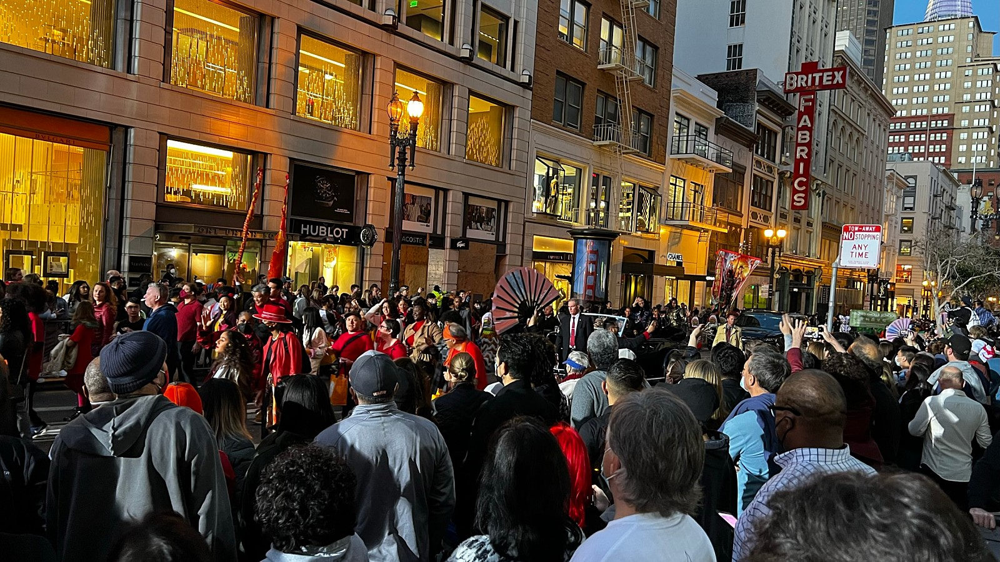

Lessons
본 컨텐츠는 SAF Korea Correspondent 활동 일환으로 작성되었다가 발행하지 않은 글입니다.
사람은 누구나 세상을 바라보는 자신의 렌즈가 있고, 나는 다양한 사람들의 다양한 렌즈에 관한 이야기를 들으며 영감을 얻는 편이라, 가장 기억이 생생할 때 이런 감상을 남겨놓는 것이 좋지 않을까 해서 이런 글을 쓰게 됐다. 지극히 개인적인 경험과 생각만 정리했다. 모두에게 도움이 될 것 같지는 않은데, 그래도 좋아하는 사람이 있겠거니…
Freedom / Diversity

Chinese parades
미국에서 느낀 점 중 가장 몸으로 크게 와닿는 것은 다양성에 대한 정의가 굉장히 포괄적이고, 그 어떤 다양성이라도 수용하고자 하는 사회 전반적인 분위기였다. 흔히 미국을 인종의 용광로라고 부르는데, 단순히 인종 뿐 아니라 전반적인 면에서 ’다양성’을 받아들이는 사회 전반의 ’그릇’이 굉장히 크다고 느꼈다.
이 다양성은 실력의 다양성, 성격의 다양성, 선택의 다양성, 외모의 다양성, 인종의 다양성 등 모든 종류의 다양성을 포괄한다. 그 어떤 부분이라도 틀린 것이 아니라 다를 수 있다는 가능성을 배제하지 않기에 지극히 개인적인 차원에서도, 사회적인 차원에서도 모든 다양성을 수용하고자 노력한다.

hiking with friends
이런 다양성은 바꿀 수 없는 것이 대체로 많고 (특히 인종), 이런 다양성은 이미 존재하는 것이기 때문에 사회 전체가 수용하여 상호 적응하고 살아간다. 그래서 미국에 사는 사람들은 (외국인 포함해서) 남에게 크게 관심이 없고, 개인적인 부분을 질문하지 않는다. 아마 ’어짜피 알아도 이해하지 못 할 것’이라는 생각이 기저에 깔려있기 때문이 아닐까 싶다.
개인적으로 미국의 다양성을 느꼈던 사례가 몇몇 있는데, 기억에 남는 것 몇 개를 적어봤다.
People’s Park protest

People’s Park protest
학교 메인 게이트인 Sather Gate에서 People’s Park renovation plan을 중단하고, 시민의 품으로 되돌려라는 시위를 하는 것을 본 적이 있다. (정문이 막혔다고 UC Police한테 메일이 온 건 덤이고…)
UC Berkeley 캠퍼스 근처에는 위험한 노숙촌으로 인식되는 People’s Park가 있다. UC Berkeley는 캠퍼스 주변을 더 안전한 환경으로 만들기 위해 캠퍼스 주변 땅을 매입해서 renovation을 진행 중인데, 그 과정에서 최근 People’s Park 부지도 구매했고, 노숙자들을 위한 housing plan을 발표하면서 본격적으로 계획에 착수했다. 학생 기숙사도 짓고, 노숙자들에게 집도 제공하겠다는 취지의 계획이다.
학기 중에 총장 명의로 People’s Park 플랜에 관련된 메일이 학생 전체에게 발송되었다.
Dear campus community, I am writing today to share word of a new, unprecedented partnership between our university, the City of Berkeley and local nonprofit organizations, a collaborative effort that will enable us to offer housing and a new daytime drop-in center to the unhoused members of our community who are currently living in and gathering at People’s Park. Last fall, we promised that construction of urgently needed student housing, as well as new permanent supportive housing for formerly unhoused and very low-income people, would not begin at the site unless and until we could meet these essential needs of those currently in the park. This new alliance will enable us to make good on that commitment, and to proceed with our plans for a new People’s Park in a way that will benefit unhoused community members, students, and residents of and visitors to our city.
해당 메일에는 학교에서 시행한 설문결과도 있었는데, 학교 근처에서 범죄도 빈번하게 일어나는 노숙촌 renovation plan에 64%만 찬성하고 있었다. 꽤 낮은 수치라고 생각했다. 심지어 기숙사까지 지어주는데 말이다… (여기 월세가 기본 500달러부터 시작하고, 계속 오르는 중인데…)
참고로 People’s Park가 얼마나 심각한 곳이냐면
On 04-17-2022 12:30:00, an aggravated assault occurred at People’s Park. In the process of breaking up a altercation between two unidentified acquaintances, the victim was hit in the head with a metal pipe. The victim did not have any visible injuries, declined medical treatment, and was unable to describe possible suspects. This case is being documented and investigated. Aggravated assault is an unlawful attack by one person upon another for the purpose of inflicting severe or aggravated bodily injury. This type of assault is usually accompanied by the use of a weapon or by means likely to produce death or great bodily harm.
이런 메일이 최소 2주에 하나씩은 날아온다.

San Fransisco
renovation plan 반대 시위도 하고, 찬성률도 낮고, 그렇다면 ‘People’s Park는 위험하고, 그 사람들한테 집도 준다는데 대체 뭐가 문제인가’라는 질문이 떠오른다. 거기에 대한 답은 미국에서는 ‘homeless가 되는 것 조차’ 개인의 선택이기 때문이다. 그리고 미국이 그러한 자유를 절대적으로 보장하는 나라이기 때문이다. 이 곳에서는 누구도 homeless를 무시하고, judge하지 않는다. (뒤에서 뒷담이야 하겠지만) 미국에서 나쁜 사람은 타인의 자유를 존중하지 않는 judging하는 사람이나 discrimination하는 사람이다. 그러한 삶의 방식 역시 누군가의 인생에서 ’선택’한 결과물일 것이며, 그 선택의 책임은 오로지 그 개인이 지기 때문에 남이 감히 판단해서 뭐라 할 권리가 없다고 보기 때문이다. 그리고 그러한 개인의 권리를 지켜내는 것이 사회에서 중요하다고 여겨지기에, 비록 People’s Park의 homeless가 아니여도 시위를 통해 ’homeless로 살 자유’를 주창하는 것이다.
추가자료
이런 갈등은 USC에도 있다. USC는 학교 주변을 전부 학생 기숙사로 채워서 USC Village라고 불리는 캠퍼스 타운을 구축하고 있다. 덕분에 주변 환경이 좋아지면서 집 값이 올라가서 원주민이 밀려나가는 gentrification이 발생하고 있는데, 이 역시 UC Berkeley와 비슷한 지역사회와 대학 간 갈등을 빚고 있다. (실리콘 밸리도 너무 성장한 탓에 원래 Bay Area에 살던 사람들이 밀려나가면서 갈등을 겪고 있다.) 차이라면 USC는 private school, UC Berkeley는 캘리포니아 주 public school이라는 점이다.
Increasing student population expedites gentrification
https://dailytrojan.com/2022/01/24/increasing-student-population-expedites-gentrification/
Construction begins on The Village
https://dailytrojan.com/2014/08/15/construction-begins-on-the-village/
실력의 다양성
어딜 가나 줄 세우기는 당연히 있고, 말도 안되게 뛰어난 천재들이 존재한다. UC Berkeley에서 정말 뛰어난 학생들을 많이 만났다.

TEDxBerkeley
EEG (Electroencephalography) 기술을 활용해서 뇌파로 컴퓨터 로그인에 성공하는 알고리즘을 개발해서 기술기반 스타트업을 만들려는 학생, political campaign을 위한 플랫폼을 기획/개발해서 운영하는 학생, voice tone 분석 알고리즘을 개발해서 현재 감정상태를 분석하고 관련 심리 프로그램을 추천해주는 앱을 만든 학생부터 정말 다양하게 만났다. 4개의 전공을 동시에 공부하는 학생도 있었고, M.E.T (Management, Entrepreneurship, and Technology) 프로그램을 듣는 학생들은 하나만 해도 힘든 EECS와 Business를 동시에 전공하고 있었다. 14살에 Venture capital에서 인턴을 시작해서 15살에 기업 하나를 매각하고 새로운 기업을 다시 시작해서 16살에 series-A funding을 달성한 고등학생에게 mentoring을 받기도 했다. Harvard Medical School Candidate이었고, 전략 컨설팅/투자은행에서 경력을 쌓았으며, 가족 중 처음으로 대학에 진학한 First Generation인 한 친구는 자신이 하고 싶은 일을 해야겠다며 모두 내려놓고 시애틀과 샌프란시스코를 돌아다니며 자신의 스타트업 동료들을 모으고 있었다.

Faculty club
이런 사람들 사이에서 나는 잘하는거 하나 없고, 좋아하는 것조차 제대로 모르고, 다양한 세상을 보고 듣고 경험하는 것이 좋다며 캠퍼스를 쏘다니는 한 학기짜리 국제학생에 불과했다. 학기 말 즈음 자연스럽게 깨달은 사실 하나가 있는데, 그래서 미국이라는 사회에 엄청난 부러움과 동경을 느끼지 않았는가 싶다.
대부분의 친구들은 이런 천재들과 경쟁해야 한다는 부담조차 느끼지 않고 있었다. 아마 전에 나의 멘토님이 말씀하신 부분이 그런 맥락이 아닐까 하고 떠올렸었다.
그런 애들은 그런 애들만 할 수 있을 일을 하러 갈거고, 너는 니 일을 하면 돼. 쟤들은 잘하니까 니가 못 하는 건 맡기고
일렬로 줄은 세우지만 여전히 다양한 실력을 포용하는 거대한 사회, 아직 기회의 창이 열린 전반적인 사회 분위기, 누구라도 기본이 되면 자신의 자리를 찾아갈 여유가 있어 보이고, 자기 자신을 위한 고민을 기꺼이 포용하는 사회라고 느꼈다. 다르게 말하면 남의 고민에 별로 관심이 없다. 자신이 뭐라 할 영역이 아니라고 생각하기 때문이다. 고민 상담해도 듣기만 하고 별 말 안한다. 이런 저런것에 피드백도 잘 안 해준다.

UC Berkeley campus
나이가 나이이다보니, freshman / sophomore보단 junior / senior / graduate 친구들이 많았는데, 졸업을 앞둔 친구에게 ‘앞으로 뭐 할 거야’ 물어보는 질문 자체를 pushing이라고 느껴서 같이 자리하는 친구들이 거의 대부분 해당 질문을 하지 않는 모습을 보였다. 종종 좋은 소식 social media를 통해서 보면, ‘너 그럼 오피스 어디야? 캘리포니아 벗어나?’ 이거 물어보고 무슨 일 하는지 딱 그 정도.

University library
다양성에 대한 포용을 또 느낄 수 있는 다른 사례로는 personal statement에서 낮은 성적에 대한 excuse를 받는다는 점이다. 당연히 미국 역시 높은 성적을 좋아 하지만, 성적이 이상하게 낮은 구간에 대해 이유가 있다면, 그 과정에서 진로를 고민한다거나 개인적인 사정이 있었다면 기꺼이 그 excuse를 받아주는 문화가 자리하고 있었다. 물론 일정 수준이 되지 않으면 할 수 없는 일들은 당연히 많고, 이 곳의 기본 학업량은 상상을 초월한다. 기본은 되어 있기에, 거기에 최선을 다하기에 나만 할 수 있는 일, 나만의 인생을 만드는 것에 집중하는 이 곳 학생들의 모습에서 내심 부러움을 많이 느꼈다.
그 외

SF MOMA
인종의 다양성은 말할 것도 없이 당연한 미국의 특징이지만, 또 흥미로웠던 부분은 diversity community, environment에 진심으로 헌신하는 사람들이 정말 많다는 점이었다. 그냥 봉사 개념의 contribution도 있었지만, community에 종사하는 것 자체가 직업인 사람들도 정말 많았다. 단일민족 국가고, 인종 개념이 없는 한국인으로서 그 동기가 굉장히 궁금해서 이런저런 이야기를 들어봤다. 적어도 내 주변에서 이런 활동을 하는 사람들은 이민자 가정에서 자라 도움 없이 자라온 설움을 다른 사람들이 겪지 않았으면 하는 마음에서 일한다거나, 다양성이 진심으로 사회 전반적으로 도움이 되니까 그런 환경을 가꾸면서 오는 empowered된 느낌을 좋아하기도 했다. POC (People of Color) fund, Indian ventures, Woman in Tech와 같은 다양성 중심 비즈니스 기회를 제공하는 곳도 정말 많았다. EOP (Education Opportunity Program), first generation college student와 같이 옛날 소 팔아 대학보내던 우리나라와 비슷하게 고등교육 기회를 제공하는 시스템도 자리하고 있었다.
아마 실패를 용인하는 문화라고 일컬어지는 실리콘밸리 전반적인 문화라고 불리는 것들이 자유와 다양성에 대한 넓은 정의 그 넓은 정의를 포용할 수 있는 큰 그릇의 사회를 부르는 다른 말이 아닐까 싶다. 동부랑은 분위기가 다르다지만, 나는 적어도 미국 사회 전반이 이러한 freedom / diversity code를 공유하고 있다고 느꼈다.
Language

UC Berkeley
캘리포니아는 미국에서도 가장 다양한 인종이 공존하는 사회고, 최근 Asian이 White를 제치고 주류 인종에 올라선 만큼 미국 내 다문화의 극단을 달리고 있다.
다른 문화권을 이해하는 방법 중 하나는 일단 언어를 배우는 것이라고도 생각한다. 첫 만남에서 그 나라의 언어로 기초적인 phrase를 던지면서 친해지는 것이 꽤 좋은 방법이라는 사실을 알았다. 한 번은 ‘어, 나 한국어 이거 이거 알아!’ 이러면서 노트까지 뒤져가면서 이야기한 친구도 있었다.
English

Main stack
개인적으로 느낀 점이지만, 영어는 잘 하는 것보다 우물쭈물 거리지 않는 것이 중요하다. (어짜피 내가 영어를 못 하는건 다들 아는 사실이라…) 물론 자신감은 실력에서 나오지만, 문법 깨져도 문장 하나 끝마치는 것이 중요하다. 친구들이 신기한 표현들 쓰면 대충 따라 써보고 틀리면 부끄럼 한 번 당하고 고치면 된다. 친구 이름 발음 잘못해서 깔깔거린 적도 있고, 뭐 물어보거나 이야기하면 ’what do you mean?’은 예사였다. 그래도 미국에서 많이 듣고 많이 말하다보면 영어는 조금 자연스러워지는 것 같다. 나는 의도만 제대로 전달되면 문제없다고 생각하고 영어 사용이 편해질 즈음 나중에는 presentation도 자연스럽게 했다.
Speaking

University library
speaking에서 다소 부족하다고 느껴진 점은 감정이나 느낌을 표현하는 단어 폭이 좁아서 답답함을 자주 느꼈다. 알러지 반응이 일어나서 병원에 갔을 때 특히 어려웠는데, 증상에 대한 단어들은 검색해봐도 죄다 처음보는 단어들이고, 신체 부위도 아는 것보다 모르는 것이 많았다. (물론 번역기를 쓰면 된다지만) 그리고 약도 뭐라 이야기해줘도 알아듣는 단어가 몇 개 없었다. 그래도 중요한 내용들은 다 알아 들어서 문제는 없었지만 말이다.

Zellerbach hall
더불어 논리적인 토론을 할 때, 순수 문장력만으로는 설명이 어려워서 예시를 들어 묘사하거나 설명을 대체하는 경험을 많이 했다. (for example, like this ~~와 같은 문장전개) 그리고 이렇게 이야기하면 되겠지하고 이야기하면 rephrase해서 재차 확인하는 질문이 들어온다거나, 단어 발음이 묘하게 다른 것을 못 알아 들어서 무슨 이야기 했는지 물어본다거나, 문장 구조를 너무 복잡하게 이야기해서 (수능 형태 문장으로) ‘뭔 말 하는거야?’ 이런 반응을 겪은 적도 있다. 이런 것이 외국어 사용자의 의사소통 시 느끼는 장벽같은 거라고 생각하는데, 내가 앞으로 개선해나갈 점이기도 하다. 그리고 대부분의 아시아 학생들은 academic reading, listening은 수준급이지만 나와 같은 문제점을 가지고 있음을 발견할 수 있었다.
Writing

Memorial glade
오기 전에 essay writing을 많이 해보는 것이 좋다. (특히 논리적 글쓰기) 미국 학생들은 중등교육 기간 내내 essay를 어마어마하게 많이 쓰는데, 덕분에(?) 나는 문장력에서 한계를 꽤 많이 느꼈다. 숙제는 600 words essay writing 이런게 나오기도 한다. 프로젝트 하면서 친해져서 매번 내 문장을 proof read하면서 고쳐쓰던 친구가 ’Siyun language’라고 놀리면서 서로 깔깔대며 teasing하곤 했다. 한 번은 술집에서 장난스럽게 대화하던 중 영어 이야기가 나와서 ’How is my English?’라고 물어보니 ’Your speaking is good, but your writing is shit. I have to re-write everytime’이라고 대답하기도 했다. 깔깔대며 나온 이야기라 당연히 웃으면서 자연스럽게 지나갔지만, 그래도 말에 뼈가 있지 않은가.
speaking은 body language로 어떻게 된다지만, writing은 그냥 글을 잘 쓰는 것 말고 방법이 없다. 양이랑 질에서 외국인으로서 굉장히 밀리는 부분이 writing이니, 이 부분을 많이 가다듬고 오면 도움이 정말 많이 된다고 확신할 수 있다.
Cultural background

weed…
그리고 영어 실력 외적으로도, 언어는 문화를 반영하기 때문에 meme이라던가 음악 장르, 영화, 스포츠 등 다양한 분야의 이야기를 접하게 된다. reggaeton이라는 음악 장르는 처음 들어봤고 (장르를 모르는 상태에서 노래는 여러 번 들어봤는데 뭔지 몰랐다) 스타워즈 이야기하면 ‘I’m your father,’ 루크 스카이워커랑 다스베이더 말고는 아는 게 없다. 우리나라 MBTI 마냥 해리포터 기숙사, Zodiac Sign 등 이야기도 많이 하는데, 외국인 입장에서 이런건 따로 시간내서 공부하기도 애매한 영역이다. 평소에 소비하는 문화가 이쪽에 맞춰지지 않으면 알기 어려운 부분이다.
비단 미국 친구들 뿐만 아니라 유럽권, 아프리카, 남미에서 온 모든 친구들의 다른나라 다른문화 이야기를 영어로 전부 듣다보면 정말 이야기할 거리가 많으면서도 서로 이해할 수 없는 토픽들만 잔뜩 있는 셈이다. 그래도 유럽 친구들은 미국 문화에 어릴 때부터 노출이 굉장히 많이 되서 이런저런 이야기하면 공감대가 있는 편인데, 특히 동아시아 3국은 나라마다 색채가 짙어서 그런 공감대가 없는 편에 속한다. 다문화 이야기는 처음 들으면 신기하지만 뭔지도 모르겠고, 설명 구구절절 하긴 애매하고, 어떤 대화로 이어가야 할 지도 막막한 그런 것들이다. 열린 태도로 관심을 가진다면 이야기거리가 많이 늘어나지 않을까 싶다.

Bay bridge
한 예로는 미국 친구, 노르웨이 친구랑 술 먹으면서 정치 이야기를 한 적이 있었다. 진지하게 토론을 마구 해대면서 liberal이 어쩌구, Republican이 어쩌구 하길래 대화에 끼다보니 한국은 어떻니 하면서 최근 대선 이야기도 하고 그랬다. 굉장히 설명이 어려워서 대충하고 말았떤 기억이 있다.
오기 전에 미국 문화에 대한 노출도도 늘리면 영어 공부도 하고 일석이조가 아닐까 싶기도 하면서, 이런 부분에 대한 고충도 있었음을 이야기하고 싶었다. 나는 이런 부분은 언어교환 어플이나 모임, 미드, 영어권 유튜브로 채운 기억이 있다.
(쓰고 보니 내가 영어 못 한다고 구체적으로 쓴 것 같다. 아무튼 이 글을 보고 교환학생 가시는 분들은 저보다 영어 잘 하길 바라면서…)

South hall
English는 baseline을 맞추지 못하면 자신감 자체를 잃어서 방에서 나오는 것 자체를 힘들어할 수 있으니, 노출시간을 되도록 많이 늘려 익숙해지는 것을 적극 추천한다. 그리고 실력이 어떻든, 미국 땅을 밟는 순간부터는 자신감을 가지고 그냥 영어를 하기 시작하는 것이 가장 좋은 자세다.
Spanish

San Fransisco
미국에는 라틴계가 많아서 기초 스페인어 몇 개를 외워두면 icebreaking에 도움이 많이된다. 라틴계 친구들이 붙임성도 좋고, Asian이 스페인어 쓰면 엄청 좋아하면서 쉽게 친근감을 표현하기 때문이다. 거기서 쓴 스페인어는 아래가 전부다. 저러고 처음에 분위기 풀고 영어로 대화…
- como estas? - how are you?
- vamos - let’s go
- amigo - friend
- hola - hello
- gracias - thank you
- muchas gracias - thank you so much
- mui bien - very well
- de nada - you’re welcome
- Coreano - Korean
- Chino - Chinese
- Mexicano - Mexican
- que tal? - how are you?
Friends

UC Berkeley
나는 한국에서는 놀지도 않고, 소위 대학문화랑은 거리가 되게 멀었다. 별로 그런게 재밌지 않았다. (술게임이라던가 술게임이라던가 술게임이라던가) 그럼에도 불구하고 다양한 사람을 만나는건 여전히 좋아해서 한국식으로 만나는 방법(술을 마신다거나, 밥을 같이 먹는다거나 하는 그 친해지는 첫 만남의 순간들… 동아리 처음 들어가고 하는)에는 나름 적응하고, 지치고, 적응하고를 반복하는 타입이었다. 미국 온다고 이런 성향이 당연히도 한 순간에 바뀌진 않는데, 경험을 다채롭게 하는 측면에서 친구를 많이 만나고 많이 사귀는 건 한국에서나 미국에서나 반드시 필요했다.
전에 인터뷰 글에서도 친구들이 짚어준 부분이지만 친구를 많이 만나야 한다. 그러면 떠오르는 질문이
당연히 많이 만나야지. 근데 어쩌라고? 어떻게 만나라고?
이런 질문인데, 나도 처음에는 그랬다. 방법도 모르고, 가서 어떤 일이 벌어질지 모르니까. 다른 친구들은 어떻게 하는지 모르지만, 적어도 나는 말이라도 먼저 걸어보는 방식을 택했던 것 같다. (도착 3일 차에 그냥 캠퍼스 지나가다 모르는 사람한테 인사하고 악수하고 이야기 나눈 적도 있다.)
Team building

Sunset
Decode Silicon Valley Startup Success 수업에서 첫 시간에 팀을 꾸리지 않으면 fail을 받는다는 통보를 받고, 팀원을 급하게 구해야 했다. 물론 처음부터 스타트업 팀을 꾸릴 수 있으면 하자 하고 온 곳이기도 해서 생각은 있었는데 되게 생각보다 이른 타이밍에 빠르게 진행해야 했다.
각 수업마다 쓰는 전체 공지 메신저가 따로 있는 경우가 있는데, 이 수업의 경우 Discord를 사용했었다. introduce yourself 채널에서 다른 친구들도 마구 소개를 남기면서 팀원을 구하길래 똑같이 따라해서 짧은 소개랑, 수업 팀원을 구하고 있다는 내용의 메세지를 남겼다.

hiking
메세지를 남기니 몇몇에게 메세지가 와서 coffee chat 약속 잡고, 뭐하고 싶니 이거하고 싶니 저거하고 싶니 이야기를 하면서 팀을 급하게 꾸렸다. 아무튼 이 때 만난 친구 중 한 명이 인터뷰를 했던 Valerie고, 하이킹 하다 만나서 팀에 영입한 홍콩 친구랑도 꽤 친해졌었다.
학기가 끝나고 나서야 깨달았지만, 학기 초 학생들은 굉장히 열정적으로 이것저것 어필하지만 몇 주만 지나도 금방 김이 다 빠져서 열심히 참여하지 않는다. (나도 비슷했다) 어딜 가나 처음에 불타오르고 시작해보니 ’내가 이거에 딱히 관심없구나’를 깨닫고 김새는건 비슷한 듯 싶다. (이 팀은 학기 mid point를 넘은 시점에서 터졌다.)
Hanging out

Yosemite valley
학기 초에는 누구누구 만나 논다 그러면 어떻게든 끼워달라고 그랬던 것 같다. 등산은 한국에서 몇 년에 한 번 가는 내가 하이킹 신발까지 사서 하이킹은 주마다 나가고 그랬었다. 술 마신다 그러면 술 먹으러 갔고, 밥 먹는다 그러면 같이 먹기도 하고 그랬다. 이래서 학기 초에 돈이 많이 든다. 이 때 친구 그룹을 안 만들어두면 끼리끼리 연락이 돌기 시작해서 아무데도 같이 못 껴서 논다. (이런 말 하는 나는 연락을 계속하는 고정 그룹이 없었다. 그래도 적당히 여기저기 섞여서 잘 논듯.)
국제 학생들은 만나면 무슨 프로그램이냐, 어디서 왔냐, 얼마나 머무냐 이 정도 물어보고 어디 놀러갔니, 뭐하고 싶니 그러면서 이야기를 나눴던 것 같다. 다양한 나라에서 미국 오게 된 이유도 되게 각양각색이고 다양하게 재밌다. 독일 친구, 스페인 친구, 멕시코 친구 다 분위기 다르고, social mix 마냥 섞여서 놀면 소소하게 culture shock 먹으면서 즐거운 때가 많았던 것 같다.
Attitude

Yosemite national park
지난 글에서 인싸만 미국에서 살아남을 수 있다는 말을 하긴 했는데, 사실은 introvert이건, extrovert이건, network 확대는 적극적인 태도가 좌우한다. 나도 introvert이고, 리액션 고장 자주 나고, 관심없는 분야는 맞장구도 잘 못치고 그러는데, 그래도 질문할 줄은 아니까 물어보고, 꼬리잡아서 또 물어보고, 고개라도 끄덕거리고 눈 계속 마주치면서 대화를 이어나갔었다. (K-reaction)
친구 사귈 때도 적극성은 정말 중요하다. 그냥 우연히 CEO 인터뷰 한 번 같이 하게 되서, 수업 때 볼때마다 인사하고, 말 걸어주고, 월요일마다 수트 입고 오길래 ‘뭐 인터뷰 보냐’ 그랬더니 자기 fraternity 때문이라고 하는 친구가 있었다. 여름에 뭐하니 물어봤더니 자기가 좋아하는 구단에 data scientist internship을 잡았다길래 잘 됐다, 어디서 일하냐 뭐가 기대되냐 이런 이야기도 나눴다. 그냥 수업 전후 짧게 대화 몇 번, 톡도 한 적 없는데 뜬금없이 이 친구가 frat party에 초대해줬다. 전혀 기대도 안한 호의를 받은 셈이다.

UC Berkeley campus
그리고 스타트업이랑 비즈니스 스쿨은 네트워킹 행사가 정말 많다. 가서 먼저 손 내밀면서 악수하고 이름 교환하는 것이 시작이다. 적극적이지 않으면 새로운 연결망을 연고도 없는 곳에서 펼쳐나가는 것은 불가능하다.
아무튼 여기서 사귄 친구들 대부분은 말 몇마디 더 해서 생긴 친구들이다.